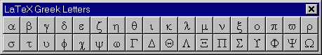
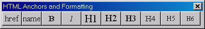
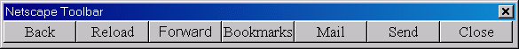

Orphanware
This software is no longer being developed or maintained.Sorry, I'm not maintaining Toolbar anymore. I highly recommend AutoHotkey—it's much more powerful and configurable than Toolbar ever was!
If you would like to take over project development, please let me know.Description
Toolbar (alias Rik's Toolbar) provides a way to add a customized floating toolbar to any application. When a button is pressed a pre-defined sequence of keystrokes is sent to the desired window. All options for the buttons and what they do may be altered within the configuration file. See the links for useful configurations submitted by users.Release Notes
v1.4c September 29, 2003- fixed: broken installer
- fixed: broken RUN command
- switched implementations of PushKeys to Alan Warriner's TPushKeys
- now supports Right-Alt key (use the "!" modifier) for international keyboards (equivalent to Ctrl+Alt)
- new installer with uninstall support
- added popup menu (right-click)
- added menu item "Create Desktop Shortcut" to create a shortcut on the desktop for this particular toolbar configuration
- added menu item "Minimize to Tray" to hide toolbar temporarily in the tray. Left-click on the icon to restore it.
- added menu item "About Toolbar" to provide program information
- support for command-line options -s[=desktop] or -s=startmenu[:folder] to create shortcuts automatically. If folder specified with -s=startmenu option then icon put in Start Menu > Programs > folder.
- now rescales window to keep it on screen. Should prevent some exceptions (error messages).
- fixed: crashes when closing and scrollbars visible. Was caused by deallocating buttons before form closed.
- added Sleep integer option to ini file to slow down typing rate
- supports separate destination windows for each button
- {RUN ...} command to execute other programs
- no longer uses ButtonCount= item
- recompiled with German keyboard support (ToolbarG.exe)
- added StayOnTop and TaskbarButton boolean options to ini file
- added Pushkeys.hlp to root folder for help with keystrokes
- first release
Download
| Toolbar version 1.4c for Windows 9x/ME/NT/2000/XP | |
| Freeware (with source code) |
Screenshots

Toolbar running with the configuration file samples\LaTeX\greek.ini.

...the configuration file samples\HTML\format.ini.

...the configuration file samples\netscape.ini.